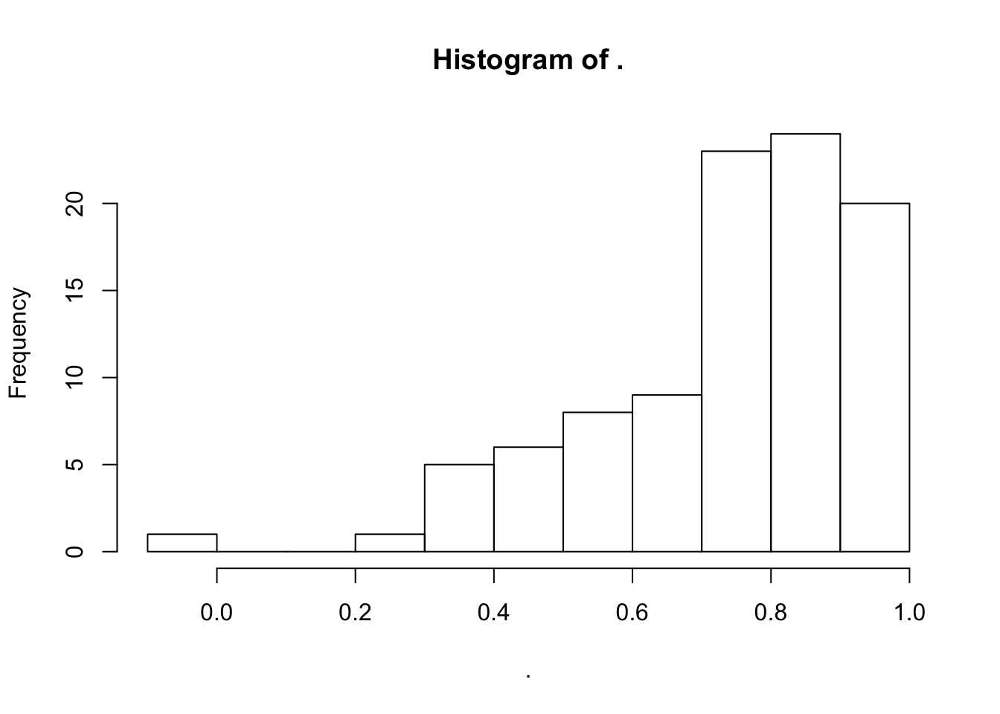

library(tidyverse)
set.seed(57291)Functional programming is another programming paradigm like object oriented programming.
It’s style that works quite well in R, because R has first class functions – you can do anything with a function that you can do with a regular value.
We’ll touch on three techniques:
All using functions in the purrr package
Resources: https://adv-r.hadley.nz/fp.html
You are already familiar with the map()!
map(.x, .f, ...).f a function to apply to each element
The rest of the family…
reduce()reduce(.x, .f)
.f is some function that takes two values and returns a single value.
reduce() iteratively applies .f to .x to reduce many values to one.
E.g. reduce(.x = c(1, 2, 3, 4), .f = f) is equivalent to:
f(f(f(1, 2), 3), 4) # OR equally
1 %>% f(2) %>% f(3) %>% f(4)Your turn Guess what the output will be, then run to check Hint: `+`(1, 2) is the same as 1 + 2
reduce(c(1, 2, 3, 4), `+`)The same as
(((1 + 2) + 3) + 4)## [1] 10sum(1:4)## [1] 10baskets <- list(
c("bread", "milk", "apples", "bananas"),
c("milk", "cheese", "bread"),
c("ham", "salami", "milk"),
c("milk", "ham", "apples", "bananas")
)Which items are in every basket?
One approach is to think about the set intersection of all the baskets.
intersect(baskets[[1]], baskets[[2]])## [1] "bread" "milk"reduce(baskets, intersect)## [1] "milk"What is the complete list of possible items in the baskets?
reduce(baskets, union)## [1] "bread" "milk" "apples" "bananas" "cheese" "ham" "salami"# A non- reduce() solution
unlist(baskets) %>% unique()## [1] "bread" "milk" "apples" "bananas" "cheese" "ham" "salami"Idea behind map-reduce a framework for working with large data sets – in the map step, workers do the map operation on the data they have, then a single process reduces all the results into one.
Imagine simulating 100 AR(1) time series with parameter \(\alpha = 0.95\):
ar1_series <- rerun(100,
arima.sim(model = list(ar = 0.95), n = 20))You can fit the model to one series with arima() (does a numerical optimization to get MLE, started from conditional least squares estimates):
arima(ar1_series[[1]], order = c(1, 0, 0))##
## Call:
## arima(x = ar1_series[[1]], order = c(1, 0, 0))
##
## Coefficients:
## ar1 intercept
## 0.6099 -0.7289
## s.e. 0.1971 0.5903
##
## sigma^2 estimated as 1.194: log likelihood = -30.38, aic = 66.77We might be interested in investigating the performance of an estimate for \(\alpha\):
map(ar1_series, arima, order = c(1, 0, 0))## Error in .f(.x[[i]], ...): non-stationary AR part from CSSOn which iteration did the error arise? How can we keep going without one error stopping all our iteration?
safely() a functional operatorsafe_log <- safely(log)Your turn What kind of object is safe_log?
Compare the output of the following:
log(10)
safe_log(10)log("a")## Error in log("a"): non-numeric argument to mathematical functionsafe_log("a")safely()returns a function that always returns a list with two elements result and error, one of which is always NULL
safely(arima)## function (...)
## capture_error(.f(...), otherwise, quiet)
## <bytecode: 0x7fa505ec1a00>
## <environment: 0x7fa508051348>Now this runs without stopping:
ar1_fits <- map(ar1_series, safely(arima), order = c(1, 0, 0))## Warning in .f(...): possible convergence problem: optim gave code = 1But the output is a little awkward:
ar1_fits[1:2]## [[1]]
## [[1]]$result
##
## Call:
## .f(x = ..1, order = ..2)
##
## Coefficients:
## ar1 intercept
## 0.6099 -0.7289
## s.e. 0.1971 0.5903
##
## sigma^2 estimated as 1.194: log likelihood = -30.38, aic = 66.77
##
## [[1]]$error
## NULL
##
##
## [[2]]
## [[2]]$result
##
## Call:
## .f(x = ..1, order = ..2)
##
## Coefficients:
## ar1 intercept
## 0.6817 3.2588
## s.e. 0.1750 0.5204
##
## sigma^2 estimated as 0.5985: log likelihood = -23.56, aic = 53.12
##
## [[2]]$error
## NULLar1_fits[1:5] %>% str(max.level = 2)## List of 5
## $ :List of 2
## ..$ result:List of 14
## .. ..- attr(*, "class")= chr "Arima"
## ..$ error : NULL
## $ :List of 2
## ..$ result:List of 14
## .. ..- attr(*, "class")= chr "Arima"
## ..$ error : NULL
## $ :List of 2
## ..$ result:List of 14
## .. ..- attr(*, "class")= chr "Arima"
## ..$ error : NULL
## $ :List of 2
## ..$ result:List of 14
## .. ..- attr(*, "class")= chr "Arima"
## ..$ error : NULL
## $ :List of 2
## ..$ result:List of 14
## .. ..- attr(*, "class")= chr "Arima"
## ..$ error : NULLWe need to find the elements where the error element isn’t NULL.
transpose() turns a list inside out:
ar1_fits_t <- transpose(ar1_fits)
ar1_fits_t %>% str(max.level = 1)## List of 2
## $ result:List of 100
## $ error :List of 100Which makes it easy to find the elements without an error:
ok <- map_lgl(ar1_fits_t$error, is.null)And use that to pull out the errors, or which samples produced them:
ar1_fits_t$error[!ok] # what were the errors## [[1]]
## <simpleError in .f(...): non-stationary AR part from CSS>
##
## [[2]]
## <simpleError in .f(...): non-stationary AR part from CSS>
##
## [[3]]
## <simpleError in .f(...): non-stationary AR part from CSS>ar1_series[!ok] # which series generated them## [[1]]
## Time Series:
## Start = 1
## End = 20
## Frequency = 1
## [1] -3.3534368 -3.0951481 -3.0516036 -4.7160478 -4.7480772 -5.7081727
## [7] -5.2347177 -5.2526778 -5.0563317 -4.0665666 -4.9653963 -5.7939490
## [13] -5.8242676 -3.0556686 -1.7263417 -0.5358495 1.7128079 2.2412037
## [19] 4.1916670 4.4768658
##
## [[2]]
## Time Series:
## Start = 1
## End = 20
## Frequency = 1
## [1] -0.36068860 0.24861314 -0.41445358 -1.14363445 -0.93666186
## [6] -0.02801535 0.94656881 1.00018206 1.65730761 3.27611153
## [11] 2.98063259 3.06498382 3.40821958 2.14774649 1.63483418
## [16] 1.00621711 -0.78402215 -1.29709084 -3.14324946 -3.89710475
##
## [[3]]
## Time Series:
## Start = 1
## End = 20
## Frequency = 1
## [1] 5.2788934 4.9829612 3.9225622 3.5281228 2.8421032 3.8841123
## [7] 4.8598289 6.1408107 5.3025480 6.6070733 5.6165941 4.5296112
## [13] 2.9581368 1.2483577 0.7783952 -1.0070619 -1.7582732 -2.9540844
## [19] -3.3423897 -4.3291866Your turn Use ok to pull out the elements that successfully fit, and find the estimate of \(\alpha\) from each one.
ar1_fits_t$result[ok] %>%
map(coef) %>%
map_dbl(1)
## OR
ar1_fits_t$result[ok] %>%
map("coef") %>%
map_dbl(1) %>%
hist()
possibly() and quietly()possibly() doesn’t capture the error, it just returns a default value you specify:
estimate_alpha <- function(x){
arima(x, order = c(1, 0, 0)) %>% coef() %>% pluck(1)
}
map_dbl(ar1_series,
possibly(estimate_alpha, otherwise = NA, quiet = FALSE))## Error: non-stationary AR part from CSS
## Error: non-stationary AR part from CSS
## Error: non-stationary AR part from CSS## Warning in arima(x, order = c(1, 0, 0)): possible convergence problem:
## optim gave code = 1## [1] 0.6099325 0.6816754 0.8255509 0.5404877 0.8281109 0.7325073
## [7] 0.6672460 NA 0.6992435 0.8318520 0.7837984 0.8435008
## [13] 0.6603792 0.9109857 0.9441183 0.3017143 0.9379027 0.7203600
## [19] 0.9464088 0.8573701 0.7976971 0.8258578 0.9794134 0.8057567
## [25] 0.8971668 0.3627412 0.7592842 0.8193397 0.9109259 0.8401488
## [31] 0.7608817 -0.0761697 0.7934027 0.7605834 0.7116478 0.5251081
## [37] 0.9234897 0.7893801 0.8782270 0.8483945 0.6645448 0.2908150
## [43] 0.8809670 0.3087400 0.7294408 NA 0.8518711 0.4165418
## [49] 0.9499480 0.4989194 0.9375076 0.7898615 0.3033989 0.3980182
## [55] 0.8899871 0.9368759 0.7860537 0.9234076 0.9002606 0.8012560
## [61] 0.8012382 0.4223826 0.5484254 0.9187579 0.7356023 0.5200131
## [67] 0.6563350 0.5997682 0.8813759 0.5965004 0.7467530 0.4123580
## [73] 0.8930968 0.5002282 0.7460675 0.8791760 0.7994180 0.9093477
## [79] 0.4632585 0.8893103 0.7498224 0.6686794 0.7158937 0.6961227
## [85] 0.7385590 0.9070601 0.9272516 0.9201210 0.5747246 NA
## [91] 0.9599866 0.7453595 0.7692607 0.8863382 0.9829849 0.9671730
## [97] 0.7060810 0.4204500 0.8737742 0.8585487quietly() captures messages or warnings.
memoise::memoise()Another useful functional operator is memoise::memoise(). It produces a version of the function that remembers which arguments is has been called with and can reuse already calculated outputs instead of recalculating them.
Functions that create functions
E.g. from Advanced R
power1 <- function(exp) {
force(exp)
function(x) {
x ^ exp
}
}
square <- power1(2)
cube <- power1(3)square(3)## [1] 9cube(3)## [1] 27Q: What’s does force() do? It forces the argument to be evaluated so you don’t end up with problems like this:
power2 <- function(exp) {
function(x) {
x ^ exp
}
}
my_exp <- 2
my_square <- power2(my_exp)
my_exp <- 3
my_square(3)## [1] 27From: https://adv-r.hadley.nz/function-factories.html#MLE
ML estimation of \(\lambda\) in a Poisson model.
If \(X_1, \ldots, X_n\) are i.i.d Poisson(\(\lambda\)), then the log likelihood is: \[ \ell(\lambda; x) = \log(\lambda)\sum_{i = 1}^n x_i - n\lambda - \sum_{i = 1}^{n}\log(x_i!) \]
x <- c(9L, 6L, 1L, 8L, 3L, 4L, 3L, 2L, 4L, 4L, 3L, 2L, 4L, 5L,
3L, 3L, 5L, 8L, 4L, 8L)Write a function for the negative log-likelihood:
nllhood_poission1 <- function(lambda, x){
-1 * (log(lambda)*sum(x) - length(x)*lambda -
sum(lfactorial(x)))
}Optimize over lambda passing in x to optimize through ...:
optimize(nllhood_poission1, interval = c(0, 10), x = x) ## $minimum
## [1] 4.450001
##
## $objective
## [1] 43.13677Define a factory for poisson negative likelihoods:
nllhood_poission <- function(x){
s_x <- sum(x)
n <- length(x)
s_fac_x <- sum(lfactorial(x))
function(lambda){
-1 * (log(lambda)*s_x - n*lambda - s_fac_x)
}
}Use it to create the function for our specific data:
nll1 <- nllhood_poission(x)
nll1## function(lambda){
## -1 * (log(lambda)*s_x - n*lambda - s_fac_x)
## }
## <environment: 0x7fa5053d8ae0>nll1(5)## [1] 43.76526optimize(nll1, interval = c(0, 10)) ## $minimum
## [1] 4.450001
##
## $objective
## [1] 43.13677Advantages:
should be faster, since the computation of the data summaries only happens once (not on every call to nll1())
bench::mark(
nllhood_poission1(5, x = x),
nll1(5)
)## # A tibble: 2 x 10
## expression min mean median max `itr/sec` mem_alloc n_gc
## <chr> <bch:tm> <bch:tm> <bch:tm> <bch:t> <dbl> <bch:byt> <dbl>
## 1 nllhood_po… 3.11µs 4.38µs 3.71µs 413.5µs 228278. 208B 1
## 2 nll1(5) 705ns 992.52ns 875ns 52.1µs 1007534. 0B 1
## # ... with 2 more variables: n_itr <int>, total_time <bch:tm>code becomes closer to mathematical structure of the problem. E.g. given data we define a function of \(\lambda\), then maximize that function.